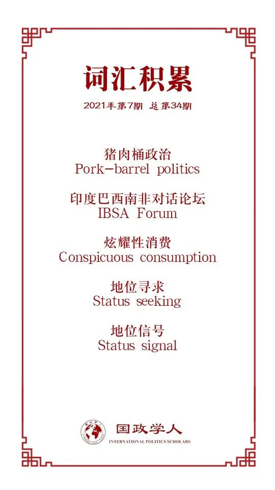

收录于合集

作品简介
【作者】 Janis van der Westhuizen，南非斯泰伦博斯大学政治科学系助理教授，研究兴趣为全球南方的比较政治与国内—国际层面的互动。
【编译】 王川（国政学人编译员，吉林大学公共外交学院）
【校对】 陈勇
【审核】 崔宇涵
【排版】 韩心蕊
【美编 】杜丛竹
【来源】 van der Westhuizen, Janis. “Status Signaling and the Risk of Domestic Opposition: Comparing South Africa and Brazil’s Hosting of the 2010 and 2014 World Cups.” Foreign Policy Analysis 17, no. 3 (2021): orab004.
【归档】 《国际关系前沿》2021年第7期，总第34期。
期刊简介
《外交政策分析》（ Foreign Policy Analysis ）杂志是由牛津大学出版社代表国际研究协会出版的季刊。该期刊旨在以比较或具体案例的方式研究外交政策决策的过程、效果、原因或结果。根据Journal Citation Reports显示，2019年该刊的影响因子为1.329。
地位信号与国内反对的风险：
2010年南非世界杯与2014年巴西世界杯的比较分析
Status Signaling and the Risk of Domestic Opposition: Comparing South Africa and Brazil’s Hosting of the 2010 and 2014 World Cups
Janis van der Westhuizen
内容提要
国家如何以及为何要寻求地位是近些年来国际关系研究的热点议题。尽管很多关于地位与国内观众的研究分析了国际成就如何有助于巩固国内合法性，但有关缺乏国内支持如何削弱地位信号的研究却相对较少。通过对比2010年南非世界杯与2014年巴西世界杯两个案例，本文分析了两国对地位信号的释放及其产生的国内政治成本。作为地位信号的一种形式，大型体育赛事是一种高度公开可见的炫耀性消费。然而，在新兴国家中，政治精英不得不从工具性与表达性两方面，阐述举办世界杯的益处。在巴西，经济危机的政治后果使得精英很难依靠巴西作为世界杯主办国的表达性价值来压制由工具性逻辑驱动的国内反对派。相反，对南非来说，2010年世界杯不仅是它的“特殊地位时刻”，而且也构成了一种“建国时刻”，这意味着在非洲首次举办世界杯的表达性价值减弱了类似的工具性质疑。
文章导读
01
地位与地位信号的复杂性
在国际政治中，地位是一国在国际社会中的排名或位次，是由“特定国家在有价值属性上的排名的集体信念”决定的。地位不同于身份，前者是关于位置，后者则是指“是谁”。行为体可以寻求更高的地位，但不能寻求更高的身份。虽然地位涉及到位置，但它是知觉性（对自我与他者的看法）与社会性（自我与他者之间地位的集体信念）的。
在国际政治的日常生活中，国家之间的许多社会互动都是由地位驱动的。在国际关系中， 地位信号仍然是一种理论上未得到充分发展、非常规的信号形式 。地位信号是指“一种信息传递机制”，即“信息持有者采取可观察的行动，将该信息提供给那些不拥有该信息的人”。地位信号不同于一般意义上的信号，它涉及到一系列的行为仪式来展现一国在国际社会中所倾向的地位。此外，地位寻求(status seeking)假定寻求者往往不满于当前地位，而地位信号不持这种假定。
借鉴吉拉迪(Lilach Gilady)与蒲晓宇的观点，本文将地位信号视为一种炫耀性消费。炫耀性消费是个人社会地位的公开展示，是领导人释放地位信号的重要策略。正如吉拉迪认为的，越是昂贵、排他、豪华的炫耀浪费，它所发出的信号就越是有效。国内对合法性的政治斗争常常会推动国际地位信号的传递，因为政治领导人试图利用其国际成就来弥补国内的失败。然而，向国内观众“推销”参与地位信号传递行动必要性的努力充满了复杂性，因为国内观众对这种信号的解读很可能与释放者希望传递给全球观众的内容大相径庭。例如，2004年，印度人民党在“印度在闪光”运动(India Shining)上花费了约2000万美元，以促进印度在全球的积极形象，但因为公众对该运动的反对，这场运动却是导致瓦杰帕伊政府选举失利的原因之一。
举办大型体育赛事已成为新兴国家释放地位信号的重要载体，一名成功的东道主不仅能够增强国家自豪感与声誉，而且能够改变对国家能力与实力的认知。然而，这对国家与企业精英来说也是一把双刃剑。未能达到预期结果反而会揭示国家政治能力的“裂痕”，揭示国家在国际上实现其政策目标的局限性。对于正在经历巨大社会和政治变革的发展中国家而言，大型活动很容易成为将国内政治问题外部化的渠道，从而引发不可预见的后果。例如，1988年汉城奥运会对韩国民主化的解放作用等。同时，通过举办大型活动追求软实力的政治精英也必须权衡其潜在收益与“软权力丧失”、声誉受损的风险。
由于地位信号涉及到国际与国内的目标观众， “推销”地位标志 （特别是公开的地位标志，例如大型活动） 需要国内公众的支持。地位信号的工具性与表达性维度往往会影响国内辩论，并使政治精英的地位信号目标复杂化 。作者在下文中比较了工具性与表达性逻辑在巴西和南非举办2014年和2010年世界杯时的演变情况。在巴西与南非这样的次等新兴大国中，国内公众可能会抓住非常明显的地位信号形式，将国内政治问题外部化，甚至直接参与到反信号传递的行动中。
02
巴西与南非的地位信号释放
分配上的不满驱动着巴西与南非的地位追求，他们希望获得更多的影响力与财富。然而，由于没有领土扩张或颠覆自由世界秩序的野心，两国并非激进的体系修正主义者，而只是存有整合或改革现有秩序的意图。鉴于它们在南美与撒哈拉以南非洲地区的长期领导作用，两国的地位诉求主要是为了确认其区域性大国角色。作为次等的非拥核大国，与中国、俄罗斯或印度不同，南非与巴西两国主要是通过发挥其软权力来扮演这些角色。
巴西与南非采取了多种举措来证明其“负责任”大国的角色，释放地位信号成为两国政府的重要手段。例如，两国参与联合国维和，并支持建立新的区域性组织（非洲联盟、南美国家联盟等）；南非前总统塔博·姆贝基的“非洲复兴”(African Renaissance)愿景；创建印度巴西南非对话论坛(IBSA Forum)；组建金砖国家；发起国际发展援助项目（作者指出，考虑到两国的国内经济状况，向国内观众“推销”在国际发展合作中发挥作用的必要性是尤为困难的，但这符合地位信号中的炫耀性消费策略）。举办大型活动也是一种非常明显的地位信号形式，南非与巴西也因举办一系列联合国大型会议和体育活动而闻名。
03
2010年南非世界杯与2014年巴西世界杯
举办大型活动不仅具有传递出崛起地位的表达性功能，而且也存在吸引国际投资、促进经济发展的工具性目的。 向国内选民“推销”举办大型活动要求同时运用地位信号的表达性与工具性逻辑。然而，在南非与巴西，政治精英与其他支持者所倡导的关于经济发展的工具性或物质性话语都因一系列背景因素而受挫，这主要包括政治与经济条件限制，世界杯前夕的社会动员问题与国际社会对其举办能力、安保状况与抗议影响的评价。本部分依次对南非与巴西在举办世界杯过程中的这三个因素进行了分析。
总之， 与巴西相比，南非利用世界杯作为地位信号所引起的国内反对较少 。关注地位信号的表达性逻辑与工具性逻辑有助于揭示两个案例之间的重要差异。
04
结果：地位信号的表达性与工具性逻辑
巴西与南非的案例揭示了公众支持国际地位信号的不同结果，这些差异在表达性逻辑与工具性逻辑的以下三个方面的复杂相互作用中尤为明显。
第一，南非关于经济利益的争论比巴西更加明显。在南非，关于举办世界杯的经济效益是否合理的争论是长期存在且频繁而广泛的，学术界和公众都对其经济可行性提出质疑。相比之下，在巴西，关于经济效益的争论更为次要。多位受访者指出，对巴西来说，举办世界杯是“自然而然的”。巴西政府官员也认为，对巴西这样一个足球国度来说，举办世界杯的经济效益是不言而喻的，因此没有明确向公众进行“推销”。
第二，与第一点相反的是，同巴西相比，表达性逻辑最终掩盖了南非对世界杯的反思。在南非的案例中，对地位信号的破坏程度与国内反对的风险较低， 表达性逻辑在多大程度上掩盖了工具性逻辑是两个案例不同结果的关键 。尽管南非国家队很早就被淘汰出局，但长达一个月的庆祝活动使得南非人跨越了种族与阶级的界限，产生了一种罕见的民族感，使2010年世界杯构成了一种“建国时刻”。一系列的民意调查也显示，世界杯的举办极大增强了南非的国家认同感、国家自信与社会凝聚力。虽然巴西也对举办世界杯感到自豪，但在极端政治与经济危机时期产生的负面物质成本压过了地位信号的表达性价值。尽管两国都对世界杯提出过类似的批评，但在南非，国家认同叙事（表达性逻辑）限制了巴西案例中那种以支持工具性逻辑为主导的政治动员，而后者最终促成了弹劾罗塞夫总统的政治运动，并导致劳工党的下台。简而言之，南非从主要强调工具性逻辑过渡到表达性逻辑，而巴西则从主要强调表达性话语过渡到工具性话语。
第三，政治文化与制度的差异巩固了表达性逻辑在南非的盛行，而工具性逻辑主导了巴西的国内争论。尽管巴西劳工党与非国大在意识形态上有着广泛的相似之处，但南非事实上的一党制巩固了表达性逻辑能够在全国范围内得到强烈回应的政治文化。与南非的议会制相比，巴西的总统制及其对政治联盟与猪肉桶政治(pork- barrel politics)的严重、脆弱依赖，放大了政党政治的分裂。政治精英可以利用高调的活动来显示地位，但这些活动也可能会成为国内群体反对政府或其政策外部化的渠道，这正是因为它针对的是国际观众。在新兴民主国家，非常公开、工具性价值很低的地位信号形式似乎更容易受到国内质疑。
05
结论
虽然既有文献承认地位信号与对外政策分析需要同国内层面更加紧密地结合起来，但有关政治精英如何向国内选民“推销”地位信号的研究仍然较少。在对国内—国际的相互作用进行反思的研究中，重点往往是政治精英如何在外部层面释放地位信号以提高国内合法性，但反过来，关于国内反对派如何导致向国际领域释放地位信号复杂化的研究却较少。
大型活动构成了一个高度公开可见的地位信号形式。巴西与南非的政治精英不得不从工具性（物质）层面和表达性（象征）层面来阐述举办世界杯的益处。两国国内选民都对举办世界杯的目的提出质疑，认为这是一种炫耀性消费。在巴西，经济危机带来的政治影响如此巨大，以至于政治精英很难依靠通过举办世界杯增强巴西的民族认同这一表达性价值来压制国内动员。虽然南非在2010年世界杯之前也经历了经济低迷，但这一活动构成了一种“建国时刻”，在非洲首次举办世界杯的表达性价值压过了工具性的批判，限制了巴西案例中的那种政治动员。
译者评述
政治精英如何向国内选民“推销”释放地位信号？国内政治如何使得地位信号的释放复杂化？本文通过对比2010年南非世界杯和2014年巴西世界杯中表达性逻辑与工具逻辑的使用，分析了国内反对派对地位信号释放的影响。地位与地位信号是近些年国际关系研究的热点话题，产生了地位竞争(status compete)、地位寻求(status seeking)、地位焦虑(status anxiety)、地位困境(status dilemma)与多重观众等理论概念与成果，为理解国家行为提供了新的视角。从研究主体上，本文关注的是次等国家的地位信号释放行为，拓宽了地位信号研究的主体。从研究内容上，本文从国内政治的角度，阐述了释放地位信号的国内复杂性。任何的地位信号都面临这国内与国际两个层面的观众，在面临国内反对的情况下，政治精英如何利用表达性逻辑与工具性逻辑应对反对力量，顺利地释放地位信号，并取得预期效果。
词汇整理

文章观点不代表本平台观点，本平台评译分享的文章均出于专业学习之用, 不以任何盈利为目的，内容主要呈现对原文的介绍，原文内容请通过各高校购买的数据库自行下载。
好好学习，天天“在看”
国政学人
支持学术公益与知识传播
微信扫一扫赞赏作者 __赞赏
已喜欢，对作者说句悄悄话
取消 __
发送给作者
发送
最多40字，当前共字
上一页 1/3 下一页
长按二维码向我转账
支持学术公益与知识传播
受苹果公司新规定影响，微信 iOS 版的赞赏功能被关闭，可通过二维码转账支持公众号。